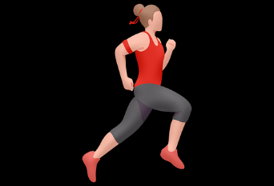

<!DOCTYPE html>
<html lang="ko"></html>
  <head>
    <meta charset="utf-8">
    <meta http-equiv="X-UA-Compatible" content="IE=edge">
    <meta name="viewport" content="width=device-width, initial-scale=1.0">
    <title>HealthCoinAlarm_Mission</title>
    <link rel="stylesheet" href="styles/mission.css">

  </head>
  <body>
    
    
    <header>start!</a>
    
      
    

    <!-- 여기에 js써서 애니메이션 형태로 구현 가능 / value = 현재칸의수(진행률)/ max = 최대칸의수-->
    <progress class ="progress_bar" value="1" max="10"></progress> 

    <!-- container에 걸음수/획득한 코인수 js로 구현 가능 -->
    <div class = "index">
        현재 코인수 <div class="container" id="current-step-count"></div>
    </div>
    
    <div class = "index">
        남은 걸음수 <div class="container" id="left-step-count"></div>
    </div>

    <!-- <div class = "index">
        남은시간 <div class="container" id="left-time"></div>
    </div> -->
    <script type="module" src="./js/alarm.js"></script>
    <script type="module" src="js/alarmOn.js"></script>
  </body>
</html>

